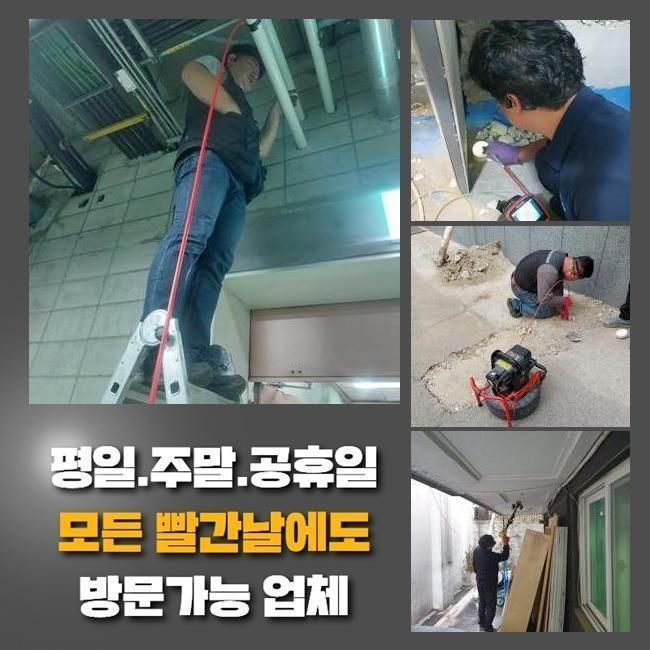
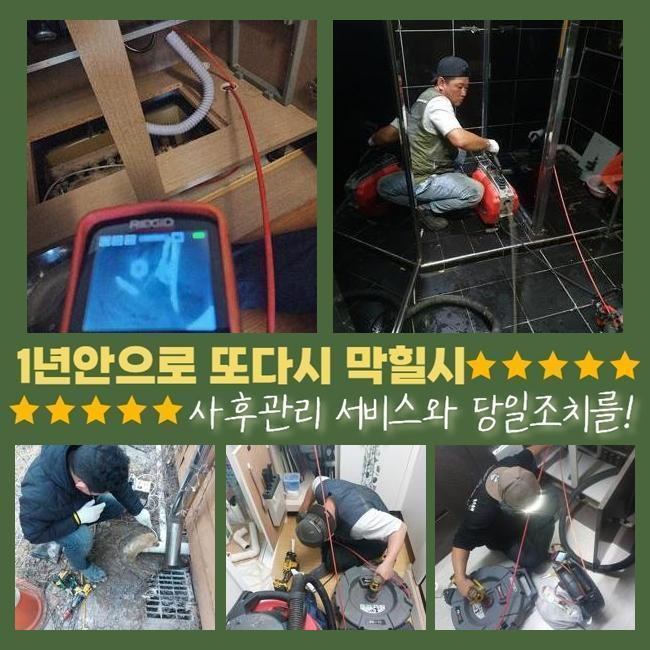
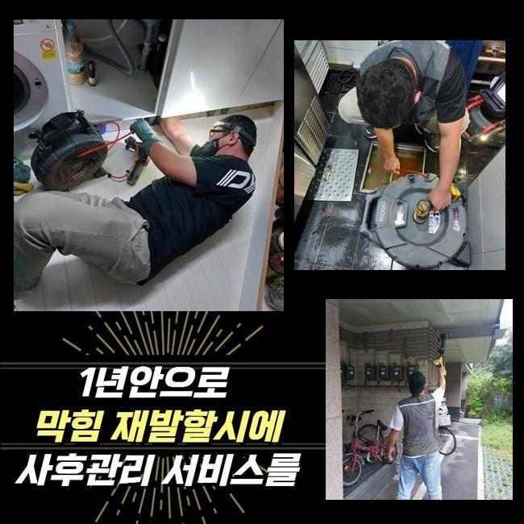
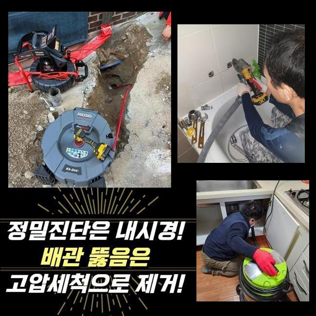
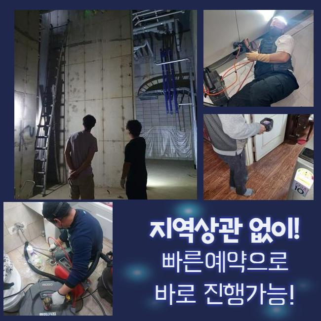

🏠 포천 군내면오수관뚫음 포천동 배관내시경카메라 설비
용인 하수구막힘 전문 시공 후기

📋 작업 개요
- 위치: 용인
- 서비스 유형: 하수구막힘, 배관막힘, 뚫는업체, 배관청소, 배관보수, 악취차단
- 작업 일시: 2025. 3. 28. 18:31
- 업체명: 하수구수사대 (010-5615-2118)
🔍 문제 상황
포천 군내면오수관뚫음 포천동 배관내시경카메라 설비
생활하수를 활용하다보면 나도 모르게 서서히 배관 통로에 지저분한 것들이 겹겹이 쌓여갈 수 있습니다
노폐물이 점점 양을 불리면 뻑뻑한 밀집도로 밀착이 되다보니 꿈쩍도 하지 않아요
벽체에 부착되어 있는 오물을 걷어내려고 배관에 무리를 주다가는 배관에 하자가 생기는 문제점까지 야기하게 됩니다
겉으로 문제가 드러나는 현장이라고 쳐도 배관용으로 출시된 장비를 접목해서 작업을 해야만 원활하고 차질없이 배수구를 회복시킬 수 있습니다
홀로 하수구 뚫음을 시도하면 전체적인 문제를 모조리 잡아내기 힘들고 큰 보람이 없을 것입니다
오늘 소개할 현장은 실거주자가 계셨었고 하수가 막히고 범람해서 악취까지 진동을 하게 만들어 제약이 정말 많다고 접수를 해주셨습니다
전화를 받자마자 도구를 빠짐없이 싣고서 황급히 내방을 드렸습니다
걸음을 재촉해서 현황을 조사하니 바닥 배수구에서 심지어 물이 솟구치는 모습이 보였습니다
고심하시다가 혹시나하는 마음으로 시중의 액상 클리너로 관통해보려 하셨지만 그다지 물길이 트이지는 않고 갈수록 악화됐다고 하셨어요

🔎 원인 분석
💡 전문가 진단: 정밀 진단 장비를 사용하여 슬러지의 고착 여부를 판명하고 타격/세척 작업을 실시했습니다.
내부의 부패한 물까지 넘쳐서 악취까지 상당해서 활동하는데 있어서 고통 받는 중이라 하셨습니다
이런 하수 정체를 분명하게 제거하는 게 목적이라면 기저의 어떤 사유로 하수관 관련한 문제점이 나타났는지 확실하게 원인 규명을 해줘야 합니다
본격 작업착수에 앞서서 누락되지 않게 지참한 내시경 기기를 동원해서 내측의 현황을 봐줬습니다
조금씩 이동하며 스크린을 주시하면서 낱낱이 분석해 봤는데 관로의 여기저기에 유분기가 가득 집합한 물질이 통수의 장애가 됐단 걸 짐작해 보게 됐습니다
이처럼 강력하게 결속된 유분 덩어리를 물리력으로 해체시키고자 한다면 관로에 누공이나 균열이 출현할 수 있습니다
맞춤으로 오물을 없애는 전문적 장치를 가동하는 편이 자극없이 고치는 방법입니다
내시경 조사를 하며 알아낸 정보들을 고객님께도 상세하게 알려드린 후 수리를 해주는 효율적 장비를 동원해서 내부 정돈을 했어요
응축된 물을 발사하는 작업이 수행됐으며 웬만큼 깨끗하게 만들고서 조금 끊어갔던 배관 카메라의 도움으로 변화한 컨디션을 체크했습니다
잔수가 어느정도 흐르는 걸 발견했지만 여전히 청소가 필요한 구간들이 식별되어 진행을 잠깐 멈췄던 세정을 거쳤습니다
유분기가 분해되고 통로가 확보됐음을 최종으로 보고서 절차를 매듭 지을 수 있었습니다

🔧 작업 과정
최후로 내시경을 넣어서 변화된 곳을 봤는데 번들대던 까만 유분기들이 전량 청소가 완료되어 파이프 안이 화사하게 밝아진 결과물을 받아보게 됐습니다
파이프라인의 사이에서 단단하게 말라 붙어있던 기름덩어리의 존재감이 인상적일 정도였지만 천만다행이게도 다른 장치를 별도로 쓰지 않고도 사태가 마무리 되어서 시공 과정이 간소화됐습니다
물컹거리는 유분이 아니라 석회때문에 흐름의 차단이 유발된 상황이었다면 가벼운 처치로는 수선되기 힘들어요
석회화된 노폐물이 방해하고 있는 현장이라면 바로 장치부터 켜기 보다는 물성이 충분히 연화되도록 연화제를 넣어야 합니다
석회 해체용으로 나온 액상을 주입한 뒤에 시간을 두면 거품이 한껏 부푸는데 여기서 수돗물을 붓고 희석시켜 주면 상호작용이 일어나면서 성질이 연하게 변합니다
하수구 석회 분해제는 일반 마트나 가게에서 바로바로 사진 못하니 석회가 자리한다는 사실을 감을 잡으셨다면 믿을 수 있는 전문가의 손길을 빌려야 재발 없이 안정화를 할 수 있습니다
단순한 배관 청소제로 통로를 개방시켜보려는 사람도 있겠지만 장애물이 석회인 상황이면 일반 클리너로는 이렇다할 성과를 내지 못해요
배수로가 막히는 사태는 확인하지 않으면 알기 어려우므로 본단계부터 착공하는 게 아니라 먼저 내시경을 안으로 넣어서 오염된 측면들을 모두 판단해야 명확하게 배수관을 만들 수 있어요
겉에서 들여다 본다고 해도 여러 갈래길로 나뉘는 수로 환경을 분명하게 판별하기는 어려움이 있어요
내시경 기기를 바탕으로 내측을 살펴보는 단계가 토대가 되어야 할 것입니다
막힘이 생겨버리는 건 며칠만에 생기는 현상이 아니고 장기간 꾸준히 누적되면서 물에 쓸려간 파편과 입자들이 지속적으로 모여서 결국 견고한 덩어리로 확대될 수 있습니다
물길에 이상이 생기기 전에 철저하게 살피며 쓰는 것이 가장 좋은데 대표적으로 규칙적으로 온기가 있는 물을 배수관을 씻어주면서 모여든 오염원들이 강제로 폐기되도록 초기에 처리해 보세요
굵은 입자의 쓰레기가 유입되지 않게끔 미세한 그물이나 필터를 씌우고 쓰시는 게 좋은 예방책입니다
거주 목적의 가정집을 비롯해 공공 건물 등 어디든 수도를 쓰는 곳에서는 예기치 않은 하수구 중단 문제를 겪을 수 있습니다
폐수과정이 더뎌졌다는 사실을 알아차리게 된 시점에는 악화되기 이전에 빠른 작업이 이뤄져야 할 것입니다
막힌 상황이 지속된다면 하수가 울컥 쏟아져 나오며 하수구 냄새가 퍼지는 등의 난항을 겪을 수 있으니까요


✅ 작업 완료
약화된 배관이 터져버리면 인접한 아래층까지 피해가 빚어질 수 있으며 이걸 수습하기 위한 금액도 스스로 부담해야 할 수 있거든요
그러니 막힘이 생기지 않게끔 각별히 검열하면서 사용 해주셔야 도움이 될 겁니다
세심하게 하수구 관리 요강을 지키더라도 활용하는 도중에는 막힘이 불가피하게 생깁니다
막연하게 힘줘서 뚫지 마시고 저희 측에 하수 시스템의 보수를 요청주시기 바랍니다


⚠️ 하수구 배관 막힘 예방 및 관리 가이드
- ✅ 머리카락, 비닐, 물티슈 등 물에 분해되지 않는 이물질은 하수구 유입을 절대 금지해 주세요.
- ✅ 하수구 거름망을 씌우고 모여진 이물질은 주기적으로 쓰레기통에 바로 비워주셔야 합니다.
- ✅ 배관 노후가 심할 경우 이물질이 더 쉽게 걸리므로 주기적인 배관 세척(고압세척 등)을 권장합니다.
- ✅ 작업 후 1년 이내 재발 시 하수구수사대에서 무상 A/S 보증 서비스를 제공합니다.
💡 핵심 정리
- 확실한 장비 작업(내시경 점검 및 샤프트 스케일링)으로 원인을 뿌리 뽑습니다.
- 작업 후 1년 이내에 동일한 부위 재발 시 100% 무상 A/S 서비스를 보장합니다.
- 서울 · 경기 · 인천 전 지역에 24시간 언제든 긴급 출동할 수 있도록 항시 대기 중입니다.
❓ 자주 묻는 질문 (FAQ)
🚨 용인 하수구막힘 문제로 고민이신가요?
정확한 원인 진단과 확실한 시공으로 재발 없는 해결을 약속드립니다.
24시간 긴급 출동 | 서울 · 경기 · 인천 전지역 | 1년 내 재발 시 무상 A/S